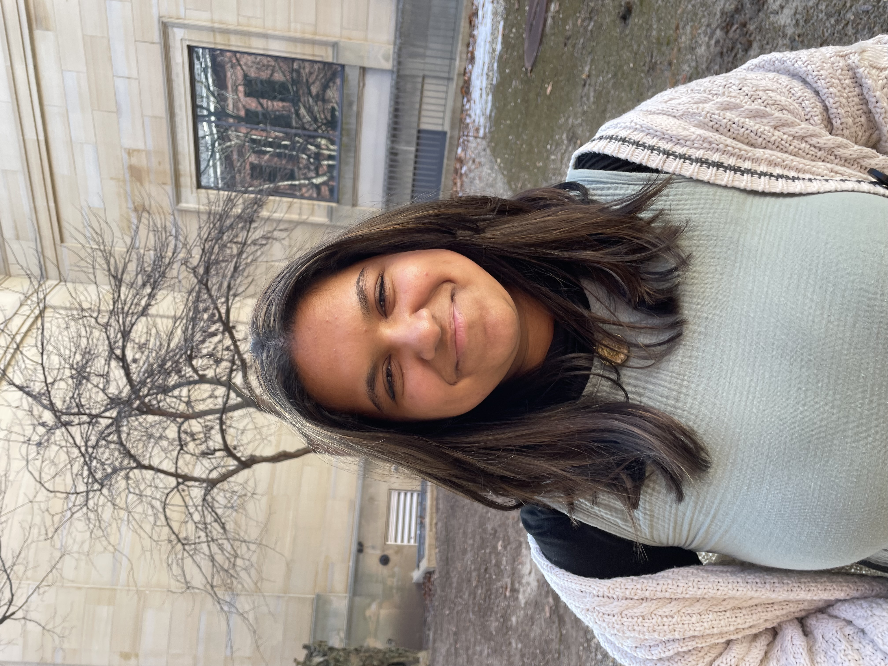

Hi! I'm Aayana (she/her), and I'm a current sophomore at the University of Michigan Ann Arbor School of Information. I'm majoring in Information Analysis. I’m also an incoming Data Analyst Intern at Stryker for the 2023 summer, where I’ll be working in the Customer Intelligence BU Analytics Team at the Kalamazoo world headquarters.
I was born in Canada, but I've spent most of my life in Michigan. I’m a first generation American and daughter of South Asian immigrants, and my culture/life experiences have always shaped my work. It’s because of my identity and upbringing that I place an especially high value on diversity, equity, and inclusion in social spaces and workplaces.
My passion is leveraging data/technology/information for social good – using technical skills to gain insights about the world and subsequently use those insights to find solutions to problems. In the process, I aim to approach my work collaboratively, ethically, and with an agile mindset.
My experiences span many subjects/fields, from media production to data analysis to consulting. I’m particularly interested in biomedicine and bioinformatics, but I'm open to any sector and always excited to learn new things.
If you have any requests or inquiries, please don't hesitate to contact me.
Technical
I've always been a problem-solver at heart. Growing up, I always loved to solve puzzles in my spare time, so naturally, when I discovered code, I loved how I could approach it like I did puzzles, where each line of code equated to a piece of a bigger picture or desired solution. Using coding as a springboard, I began to explore technology careers – anything that involved the problem-solving aspect of programming. This led me to begin pursuing extracurriculars and enrolling in classes that fueled these interests.
Creative
I’ve been writing for as long as I can remember. When I was 5, I wrote (and poorly illustrated) books about fictional female superheroes out of stapled construction paper. Now, I write short stories, prose, poetry, and I also journal daily. I find that writing helps me stay grounded, especially when life happens. Furthering this interest, I’ve become a podcast host for an intersectional feminist organization, What the F.
Being a creative individual has helped me hone my problem-solving, technical, and communicative skills – arguably more than any STEM class ever has. Technical classes have provided me with frameworks, algorithms, and coding experience, but it’s always been my creative edge that has enabled me to transform these skills into actionable building blocks to solve problems. It helps me communicate complicated ideas, break down large tasks, and continue seeing potential in a field that is often siloed and binary.